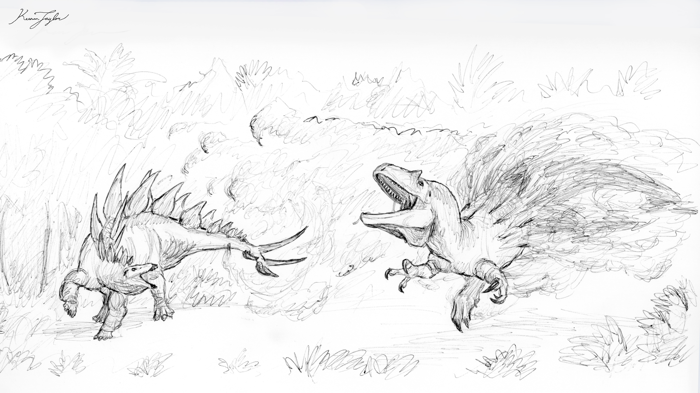
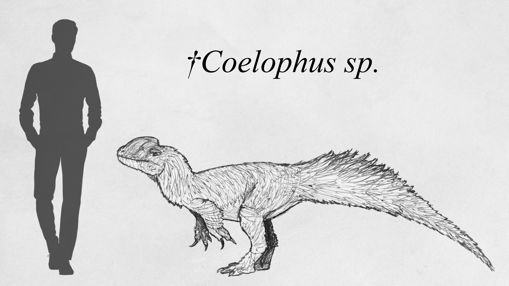
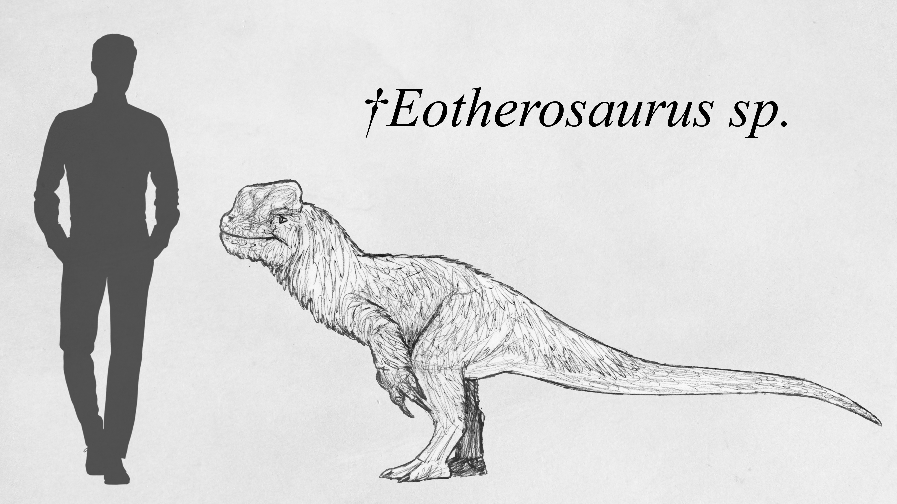
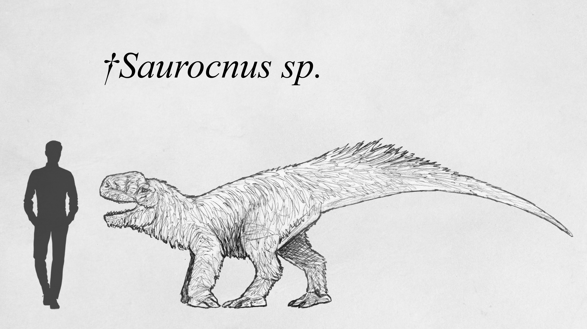
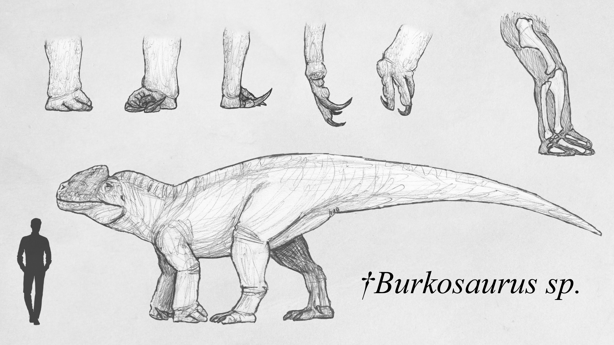
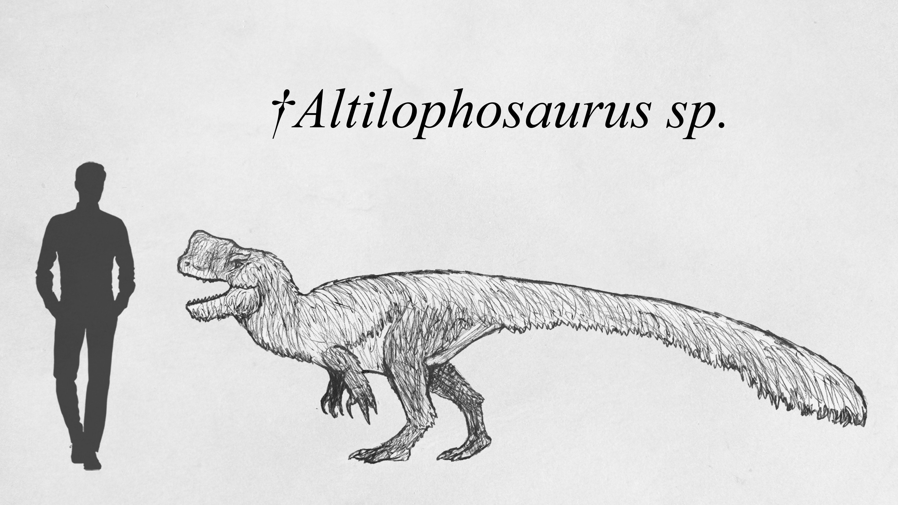
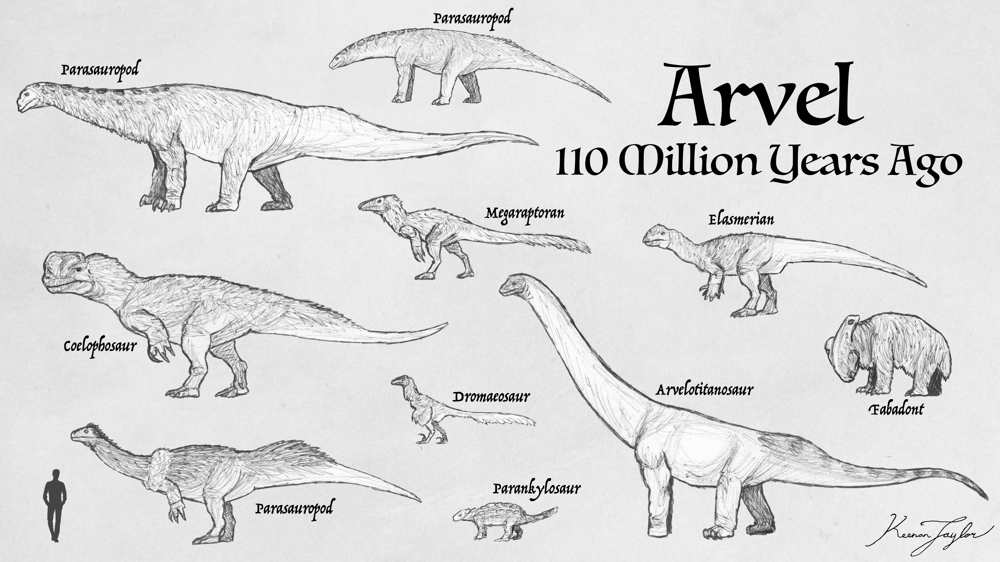
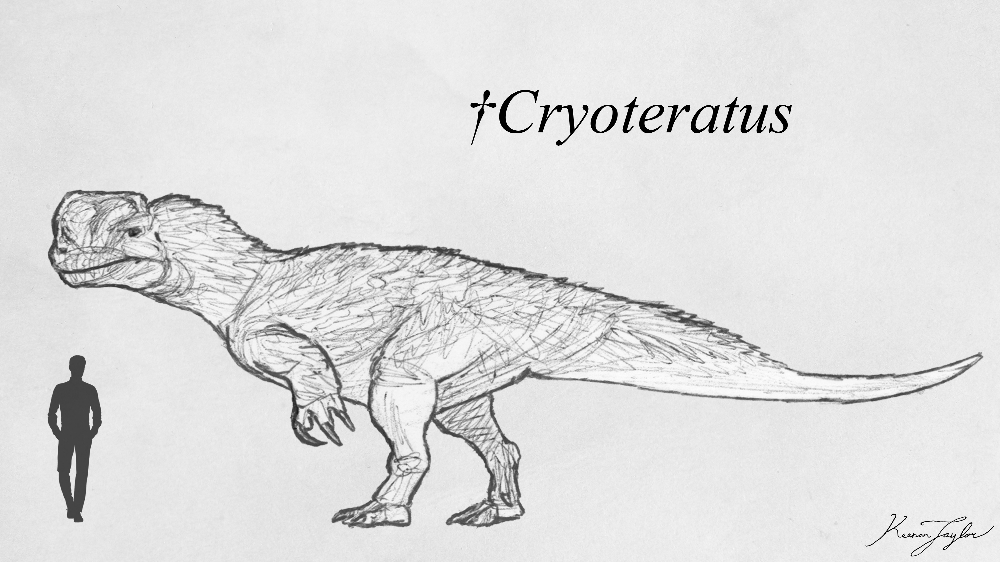
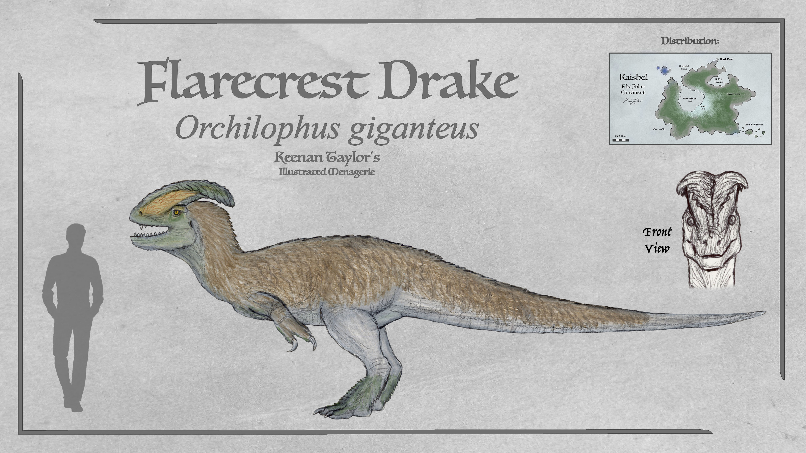
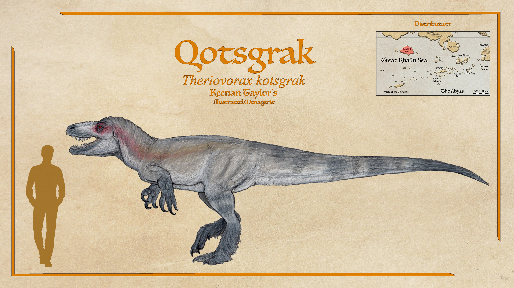

Scientific Classification
| Kingdom | Animalia | Animalia | Animalia |
|---|---|---|---|
| Phylum | Chordata | Animalia | Animalia |
| Clade | Archosauria | Animalia | Animalia |
| Clade | Dinosauria | Animalia | Animalia |
| Clade | Theropoda | Animalia | Animalia |
| Clade | Tetanurae | Animalia | Animalia |
| Clade | Coelophosauria | Animalia | Animalia |
Taxonomic note: The name Coelophosauria derives from the prominent sinus crests found in many members of the clade during its early evolutionary history. These structures were particularly exaggerated in several species, giving them a distinctive appearance among contemporary theropods. However, the crests are not exclusive to coelophosaurs. Similar structures evolved independently in basal theropods such as Dilophosaurus, Monolophosaurs, and in unrelated theropod lineages. Furthermore, several animals now classified as coelophosaurs lack prominent crests altogether.
01 · INTRODUCTION
Overview
The Coelophosaurs are a distinctive clade of native Kaimeran neotheropods whose evolutionary history is inseparable from the planet's repeated climatic upheavals during the Jurassic and Cretaceous. Although the group is named for the prominent sinus crests developed by many of its members, these structures are not universal among coelophosaurs, nor are they exclusive to the clade. Their exaggerated development in several early forms nevertheless gave the group its enduring name.
Coelophosaurs are characterized by their comparatively broad, flattened skulls, often described as hatchet-shaped. Their faces are not as narrow as those of many other theropods, and the overall proportions of their skulls are closer to those of allosaurs than to the exceptionally broad-jawed tyrannosaurids. They were generally powerful predators, with robust jaws and substantial forelimbs in several derived lineages. Their evolutionary success was closely associated with their ability to withstand the cold periods that devastated many of Kaimere's earlier tropical ecosystems.
The group originated among the native theropods of Kaimere's southern temperate regions. During the First Age of Dinosaurs, coelophosaurs became dominant predators throughout much of Kairul and Ni'Khar, particularly during glacial periods. Their success was not simply a consequence of their size or strength: they occupied environments in which many newly harvested tetanurans struggled to survive, allowing native lineages to persist through repeated ecological turnovers.
As the climate warmed, coelophosaurs diversified into northern and southern lineages. The northern branch eventually produced the therosaurs, a group of unusually robust theropods capable of supporting themselves on all four limbs. The southern branch included increasingly formidable predators, among them Altilophosaurus and the later Cryoteratus. Other lineages spread across the southern continents and islands, where they continued to diversify into the Cretaceous.
Coelophosaurs were not uniformly successful throughout their history. Their fortunes depended heavily on climatic conditions, geographic isolation, and competition with newly arriving dinosaurs. Some lineages became extinct as their habitats warmed, while others survived by expanding into newly available territories. Their history is therefore one of repeated expansion and contraction rather than uninterrupted dominance.
02 · DEEP TIME
Evolutionary History
The First Kaimere Ice Age
The origins of Coelophosauria are associated with one of the most consequential climatic transitions in Kaimere's history. For much of the preceding tropical dynasty, crocodilians and other pseudosuchians had dominated the warm lowlands. Their reign, however, depended upon climatic conditions that were not to last. Around 152 million years ago, Kaimere underwent a pronounced cooling event. The cause remains uncertain, although changes in axial tilt and continental movement affecting ocean circulation have both been proposed.
Average annual temperatures fell by approximately eight degrees. This did not produce a permanent tropical ice sheet, nor did glaciers extend throughout the temperate regions. Instead, the planet experienced a prolonged period of climatic instability, with repeated fluctuations between warmer interglacials and colder conditions.
These changes proved devastating to the old tropical fauna. Protosuchians became increasingly scarce, while their endothermic dinosaur competitors were better equipped to maintain activity in the newly cooled environments. The same metabolic efficiency that had previously allowed dinosaurs to prosper in the tropics became a disadvantage to the more temperature-dependent pseudosuchians.
The first harvests of the transition period were similarly unstable. Animals introduced through the Portal could prosper during warmer intervals only to perish when temperatures fell again. Even when Earth's polar regions were harvested, their fauna did not necessarily possess the adaptations required to withstand Kaimere's coldest conditions. Sauropods, in particular, appear to have struggled to establish lasting populations.
The native theropods of the southern temperate regions fared better than most. Among these were the ancestors of the coelophosaurs, which were able to exploit the increasingly favorable conditions of the temperate zones.
The Seven Million Years of Instability

The period between approximately 152 and 145 million years ago was not formally recognized as a Dynasty. Climatic conditions and ecological communities changed too rapidly for a lasting status quo to emerge.
Like the modern Warring Clades Period, this era was characterized by repeated harvests and continual ecological disruption. The Portal rarely remained inactive for long, and the fauna of Kaimere was repeatedly exposed to new competitors.
This instability was especially severe during the coldest interval, beginning around 147 million years ago. For approximately one million years, Kaimere experienced the coldest conditions known since the First Dynasties. The cold exceeded even the most severe years of the Permian Dynasty and was unmatched by any subsequent period.
Extinctions peaked across both terrestrial and marine ecosystems. Even dinosaurs adapted to colder environments, including Mammuthsdraco and Selenocephalus, struggled to maintain their populations. Their eventual extinction would occur not during the coldest years themselves, but during the climatic transition that followed.
The coelophosaurs, however, were among the native theropods that survived this period particularly well. Their adaptations to the temperate zones gave them a considerable advantage over many newly harvested tetanurans, which were more successful during warmer interglacials.
The First Age of Dinosaurs
Around 145 million years ago, Kaimere experienced a sudden warming. The planet did not return to the humid hothouse conditions of the preceding dynasty. Instead, temperatures rose while much of the climate remained relatively arid. The warming disadvantaged many animals that had become specialized for the ice ages. Before these lineages could fully recover, a new series of harvests introduced extensive flora and fauna from both Laurasia and Gondwana. These arrivals established the ecological foundation of Kaimere's First Age of Dinosaurs.

One of the most important clues to the origins of this dynasty is a partial skeleton of Allosaurus fragilis recovered from the southern Crescent. Its identification to the same species known from Earth provides unusually strong evidence for a harvest from Late Jurassic North America. Material tentatively assigned to Saurophaganax from the same locality suggests that the harvest may have occurred during the late Kimmeridgian, approximately 150 million years ago.
For much of the twentieth century, a single harvest from the Morrison Formation was considered a plausible explanation for the establishment of the dynasty. The broad correspondence between Kaimere's fauna and the Morrison assemblage—including ceratosaurs, megalosaurs, sauropods, ornithopods, and armored dinosaurs—supports the possibility of a major North American contribution.
Nevertheless, the dynasty was probably not the result of a single introduction. The origins of many lineages remain uncertain, and the repeated harvests of the preceding transition make it difficult to establish precise relationships between early Kaimeran and Earth-derived taxa.
Despite the arrival of numerous new dinosaurs, coelophosaurs remained important predators throughout the First Age of Dinosaurs. Their success was especially pronounced in the temperate regions, where they continued to exploit the ecological advantages established during the preceding ice ages.
The Northern Coelophosaurs and the Origin of Therosaurs

As Kaimere warmed, coelophosaurs diverged into northern and southern lineages. The northern branch descended from smaller forms such as Coelophus. These animals generally lacked the exaggerated sinus crests characteristic of some of their southern relatives. Their relatively modest size initially distinguished them from the larger predators of the tropics, but they eventually became increasingly formidable.
The northern coelophosaurs evolved into the therosaurs, a distinctive lineage of robust theropods. Although the largest members could approach four tonnes, most were considerably smaller. They became dominant predators in northwestern Kairul before spreading throughout the northern temperate zone. Therosaurs are remarkable for being the only known quadrupedal theropods. Their evolution toward four-legged locomotion was not simply a consequence of increasing body size. Rather, it appears to have been an adaptation for balance and the simultaneous use of powerful forelimbs and jaws.
This distinction is important because therosaurs did not need to rely on the extreme pneumaticity characteristic of some later megaraptorans. Their robust arms, heavily built chests, and powerful jaws allowed them to employ multiple methods of attack without the same anatomical compromises.

Eotherosaurus is generally regarded as the earliest known therosaur. It was common during the ice ages and remained abundant in northern Kaimere during the climatic transition that followed. Its wrists possessed adaptations that allowed it to support weight on all four limbs, although it was probably still primarily bipedal. This combination of traits provides evidence that quadrupedal locomotion developed gradually rather than appearing suddenly in the largest members of the group. The anatomy of Eotherosaurus suggests that the evolution of quadrupedalism was associated with balance and the use of the forelimbs, rather than simply with increasing body mass. Forms resembling it persisted throughout the First Age of Dinosaurs, indicating that the transitional anatomy was not restricted to a brief evolutionary interval.

By the Second Mesozoic Dynasty, therosaurs had already attained substantial size. Saurocnus, for example, reached approximately five meters in length and was a formidable predator by the time allosaurs and other tetanurans entered its territory. Although its type specimen is incomplete, a complete left arm and hand have been recovered. These remains demonstrate that its forelimbs were already highly derived and capable of bearing weight.

By the middle of the First Age of Dinosaurs, Burkosaurus had become the apex predator of northern Ni'Khar. Its principal prey included parasauropods, a diverse group of herbivores possessing a wide range of defensive adaptations. Some were bipedal, others quadrupedal, and many possessed formidable weapons or armor. The combination of powerful jaws and lethal claws gave Burkosaurus an unusual degree of versatility. Rather than relying upon a single method of attack, it could employ its forelimbs and jaws in different circumstances. This versatility appears to have served it well, and the genus seems to have dominated tetanurans in regions where their ranges overlapped. Its robust construction and relatively limited pneumaticity may, however, have restricted its ability to tolerate warmer climates. Although successful in the northern temperate regions, Burkosaurus appears to have been poorly suited to the increasingly warm tropics.
Following the preluding extinction events of around 115 million years ago that starts of the Third Mesozoic Dynasty, the therosaurs ultimately went extinct alongside numerous other fauna. However, their southern relatives live on, and still hold claim into the modern day.
The Southern Coelophosaurs
While northern coelophosaurs were evolving toward quadrupedal locomotion, their southern relatives followed a different evolutionary trajectory. These animals remained primarily bipedal and developed into increasingly large predators. Their success was closely associated with the cold temperate environments of southern Kairul and Ni'Khar, where they competed effectively with newly harvested theropods.

The southern lineage included Altilophosaurus, a common coelophosaur during the early Third Mesozoic Dynasty. As the climate warmed and competition from coelurosaurs increased, Altilophosaurus became increasingly uncommon. It is nevertheless believed to have been directly ancestral to one of Arvel's most important predators.
The southern coelophosaurs were not confined to their original territories. As continental movements altered the geography of Kaimere, they gained access to new environments and opportunities for expansion.
The Second and Third Mesozoic Dynasties

Around 110 million years ago, a decline in tropical fauna and a marked increase in harvests accompanied the transition between the Second and Third Mesozoic Dynasties.
Unlike many other dynastic transitions, no major climatic or geological event has been identified as the cause. The following dynasty was somewhat warmer and more humid, but the change was not sufficiently dramatic to explain the transition by itself. Disease introduced through harvests has been proposed as a possible explanation, although there is currently no supporting evidence.
Between approximately 115 and 110 million years ago, Ni'Khar and Kairul underwent a broad transition in their flora and megafauna. The resulting ecosystems became increasingly dominated by Gondwanan animals, with only a small number of native large animals and perhaps a single major Laurasian contribution remaining.
As temperatures continued to rise, parasauropods and coelophosaurs lost much of the ecological advantage they had enjoyed in the colder temperate zones. Competition from newly introduced coelurosaurs became increasingly severe.
In the south, Altilophosaurus persisted for a time but eventually declined. In the north, a portion of Kairul was isolated before the arrival of some of the new competitors, allowing a few native lineages to survive.
For the southern coelophosaurs, however, their most important refuge was not an isolated fragment of land. It was an entirely new continent.
Arvel and the Great Biotic Interchange
During the Cretaceous, Arvel was part of a vast southern supercontinent that also encompassed what are now Kaishel, Pakardia, and the Khalin islands. Much of this landmass remained near the polar regions, although a portion of what would become Arvel extended into the temperate zone.
Around 115 million years ago, western Arvel was connected to eastern Kairul by a short land bridge. Arvel would not become fully separated from the southern continent until approximately eighty million years ago, but the temporary connection was sufficient to initiate a major biotic interchange.
Until this time, much of the southern continent had been dominated by endemic Kaimeran tetrapods rather than dinosaurs. Heterothermes occupied the highest predatory niches, while fabadonts were among the most successful large herbivores. These animals were adapted to environments where food availability and temperature could fluctuate substantially.
The increasing warmth of the global climate disadvantaged many of these cold-adapted native lineages. The temperate dinosaurs of Kairul and Ni'Khar, meanwhile, were struggling in their own increasingly warm territories. The land bridge therefore created an opportunity for both groups, but the consequences were particularly favorable for dinosaurs.

Parasauropods and coelophosaurs spread rapidly through Arvel and into the southern supercontinent. They were joined by elasmerians, dromaeosaurs, and megaraptorans, while titanosaurs remained largely restricted to the warmer northern regions of Arvel. Among the dinosaurs, parasauropods and coelophosaurs were especially successful. Their expansion established a new ecological foundation across much of the southern continent.
The land bridge existed for only a brief period, perhaps as little as five million years, before the southern continent continued its clockwise rotation. Nevertheless, the interchange had already transformed the fauna of Arvel and the surrounding regions.

Shortly after the establishment of the new dinosaur ecosystems in Arvel, a large predator evolved from a moderately sized coelophosaur resembling Altilophosaurus. This animal, Cryoteratus, became a highly successful predator and established a lineage that would persist for tens of millions of years. Its emergence demonstrates the evolutionary potential of the southern coelophosaurs. Although their original territories were becoming increasingly competitive, the arrival of new land allowed them to expand into environments where their inherited adaptations remained advantageous. The Cryoteratus lineage would become one of the most enduring branches of the coelophosaur radiation, contributing to the continued presence of these predators in the southern continents.
The Late Cretaceous and the Fragmentation of the Southern Continent

Around 85 million years ago, the southern continent began to break apart in earnest. Arvel itself would not separate completely for another five million years, but the region experienced extensive volcanism and increasingly unstable geological conditions. Whether this activity directly caused the end of the Third Mesozoic Dynasty remains uncertain. As with the transition between the preceding dynasties, the boundary is difficult to define precisely.
The following period may have been too brief and unstable to qualify as a formal dynasty. Harvests continued throughout the Campanian and Maastrichtian, and the interval may have lasted no more than seven million years. Nevertheless, it represents a significant phase in the evolutionary history of Kaimere's dinosaurs.
The coelophosaurs remained important predators during this period, but their diversity and geographic distribution became increasingly fragmented. The changing continents created isolated populations, while successive harvests introduced new competitors and altered the composition of local ecosystems. The late Cretaceous coelophosaurs of the Khalin islands are among the most intriguing remnants of this history.
03 · SPECIES ACCOUNTS
Known Diversity
The following accounts document representative coelophosaurs recorded in the encyclopedia. Select a species to consult its individual natural history and descriptive account.
Flarecrest Drake

Orchilophus giganteus
The flarecrest drake is one of the largest coelophosaurs in the southern hemisphere, and is the apex predator of Gyrehall Island. They enjoyed dominion over the island in the aftermath of the Silent Ones being driven to extinction by the arrival of the Tlaton, though feral dogs recently introduced by Kaimerans have been a serious problem for juveniles, especially in the lowlands both as competition and direct predation. Adults have taken to hunting dogs, and males especially become dog hunting specialists, and it is believed they may be approaching an equilibrium.
Read species article →Qotsgrak

Theriovorax kotsgrak
The top predator was called the Blackfish Megalosaur by Dr. Belgrave, which Felicity called the Hyote teratorn, and Yo'qotstena called the qotsgrak. Wind-Kisser claimed they eat anything on the island. That they are what all Ehyoke boys hope to come back as after they die. Though proposed to be many different things over the years, it appears likely that they are a coelophosaur. They lack the tall air-filled crests from which the clade derives their name, but numerous similarities to the Kaishelan coelophosaurs like the similarly-sized flarecrest drake of Gyrehall Island support this interpretation. They have serrated blade-like teeth and are said to bite with such speed that they can cut beasts and men in half. While they have great claws, from what Felicity reported, the Ehyoke mountain men she spoke with claimed they only use them to carry prey or to 'hug large beasts while the jaw does its wicked work'. Though Felicity never saw one, she was told they did not have feathers except on their feet, which she thought was strange based on what little she knew of teratorns of the mainland. It is possible that, being from a cold place that has become warm, they lost their insulation except as this display feature.
Read species article →04 · CLASSIFICATION
Taxonomic Notes
Coelophosauria is a clade of neotheropod dinosaurs endemic to Kaimere. Its members, commonly called coelophosaurs, were among the most successful native theropods of the planet's ancient temperate regions. They occupied the role of apex predators across much of Kairul and Ni'Khar during successive periods of climatic instability, and later spread into Arvel and the southern continents. Their descendants persisted in a variety of environments, including the temperate forests of Kaishel and the islands of the Great Khalin Sea.
The name Coelophosauria derives from the conspicuous sinus cavities that formed elevated crests on the skulls of many early members. These structures were particularly exaggerated in several forms from the cold periods of Kaimere's early Mesozoic history, making them a distinctive feature of the clade's fossil record. They are not, however, a unique anatomical feature of coelophosaurs. Similar crests evolved independently in other theropods, including the dilophosaurid relatives of Dilophosaurus, while numerous animals now classified as coelophosaurs lack them altogether. The name is therefore historically descriptive rather than a definition based upon a single diagnostic structure.
Coelophosaurs are recognized as a distinct native lineage of neotheropods, separate from the various tetanurans and ceratosaurs that entered Kaimere through the Portal. Their skulls are generally characterized by a relatively flat, hatchet-shaped profile. The jaws are not as narrow as those of some other theropods, but neither are they uniformly as deep and heavily constructed as those of the most robust tyrannosaur-like predators. In overall facial proportions, comparisons with Allosaurus are often more appropriate than comparisons with the broadest-jawed theropods.
The clade contains considerable anatomical diversity. Some members retained the conventional bipedal form of most theropods, while the northern lineage known as the therosaurs eventually developed quadrupedal locomotion. These are the only known quadrupedal theropods. Coelophosauria also includes large terrestrial predators, smaller feathered forms, and island species whose anatomy and ecology remain incompletely understood.